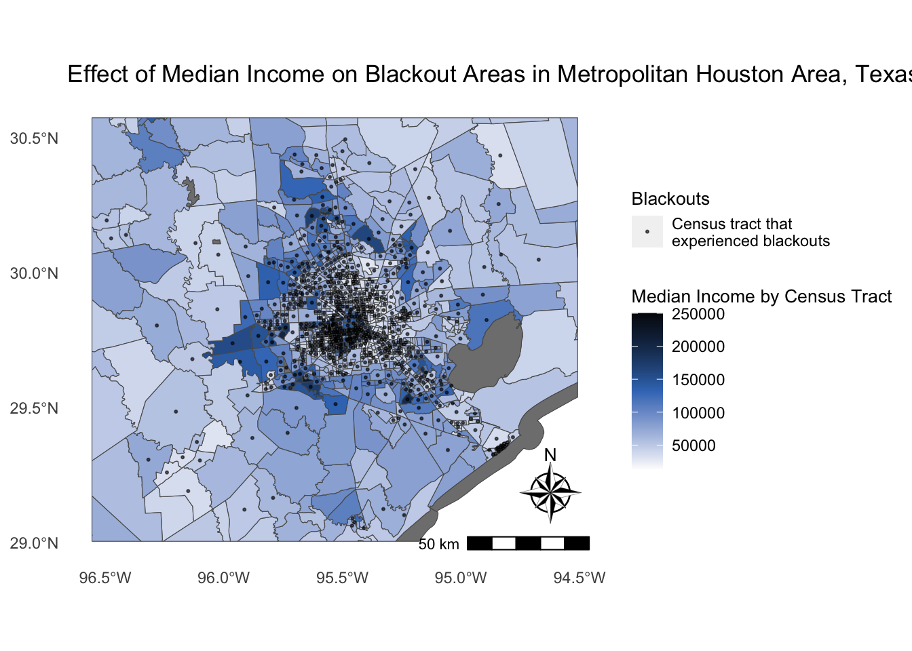
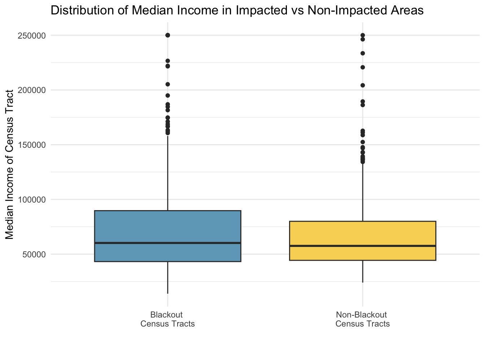

# load libraries
library(tidyverse)
library(sf)
library(stars)
library(raster) # this is going out of commission
library(ggspatial)Houston Blackouts Analysis
Background
In February 2021, Texas experienced multiple winter storms that led to power outages across the state and left over 4.5 million homes and businesses without power1.
Goals
- Investigate socioeconomic factors associated with occurrence of blackouts in Houston, Texas metropolitan area.
- Explore the socioeconomic factors that influenced recovery post blackouts in the Houston
Takeaways
- There was no difference in the median income distribution of counties that experienced blackouts and those that did not experience blackouts.
- More exploration of income distribution at a finer spatial resolution would be beneficial to understand any economic disparities in the preparedness for buildings to handle winter storms in Houston, Texas.
Datasets
The sf and stars package will be useful for handling the raster data.
1. Night Lights
Date
Use NASA’s Worldview to explore the data around the day of the storm. We used two contrasting images to visualize the extent of the power outage in Texas from 2021-02-07 and 2021-02-16. There were other days we could have chosen but there was too much cloud cover for them to be useful.
Location of Houston
The VIIRS data is distributed in 10x10 degree tiles in sinusoidal equal-area projection. They are identified by horizontal (h) and vertical (v) position in the grid. Houston is included in two tiles: h08v05 and h08v06. We can access tiles through NASA’s Level-1 and Atmospheric Archive & Distribution System Distributed Active Archive Center (LAADS DAAC). Since we have two dates, we need to access these tiles on each day.
This data is stored in the VNP46A1 folder. - VNP46A1.A2021038.h08v05.001.2021039064328.h5.tif: tile h08v05, collected on 2021-02-07
- VNP46A1.A2021038.h08v06.001.2021039064329.h5.tif: tile h08v06, collected on 2021-02-07
- VNP46A1.A2021047.h08v05.001.2021048091106.h5.tif: tile h08v05, collected on 2021-02-16
- VNP46A1.A2021047.h08v06.001.2021048091105.h5.tif: tile h08v06, collected on 2021-02-16
2. Roads
Since highways account for a large amount of night lights, we want to exclude areas near highways to prevent falsely identifying areas with reduced traffic as areas without power. A shapefile with all of the highways in Texas was prepared by Geofabrik’s download sites, and we compiled a subset of roads that intersect the Houston metropolitan area in a Geopackage (.gpkg file).
gis_osm_roads_free_1.gpkg
3. Houses
We prepared a GeoPackage with only houses in the Houston Metropolitan Area using building data from OpenStreetMap which was provided by Geofabrik.
gis_osm_buildings_a_free_1.gpkg
4. Socioeconomic
We used the U.S. Census Bureau’s American Community Survey for census tracts in 2019 as a proxy for socioeconomic information at the county level. This data is stored in a folder: ACS_2019_5YR_TRACT_48.gdb which has layers that can be accessed using st_layers(). Each layer is a subset of the fields contained in ACS metadata.
Since the layers are separate, to access the ACS attributes associated with the geemetries you have to combine them into a single feature layer.
Load libraries
Read in the Night Lights Data
- The
starspackage is good for handling raster. First, read in all the tiles for the dates of interest.
# read in night VNP46A1
# tile h08v05, collected on 2021-02-07
houston_5_7 <- read_stars("/Users/lunacatalan/Documents/dev/eds223/homework/assignment-3-lunacatalan/data/VNP46A1/VNP46A1.A2021038.h08v05.001.2021039064328.tif")
# tile h08v06, collected on 2021-02-07
houston_6_7 <- read_stars("/Users/lunacatalan/Documents/dev/eds223/homework/assignment-3-lunacatalan/data/VNP46A1/VNP46A1.A2021038.h08v06.001.2021039064329.tif")
# tile h08v05, collected on 2021-02-16
houston_5_16 <- read_stars("/Users/lunacatalan/Documents/dev/eds223/homework/assignment-3-lunacatalan/data/VNP46A1/VNP46A1.A2021047.h08v05.001.2021048091106.tif")
# tile h08v06, collected on 2021-02-16
houston_6_16 <- read_stars("/Users/lunacatalan/Documents/dev/eds223/homework/assignment-3-lunacatalan/data/VNP46A1/VNP46A1.A2021047.h08v06.001.2021048091105.tif")Combine the raster’s from the same day using st_mosaic so that we have a complete picture of the lights in Texas on the 7th, before the storm, and on the 16th, after the storms.
# combined tiles for 2021 - 07
h_7 <- st_mosaic(houston_5_7, houston_6_7)
# combines tiles for 2021 - 16
h_16 <- st_mosaic(houston_5_16, houston_6_16)Find the change in light intensity between these two days to determine the locations where a blackout occurred.
We can use map algebra to get the change by just subtracting the lights post storm from lights pre storm to determine which areas experienced a blackout. The output will be a map of Texas.
We are assuming that a change (aka a drop) of 200 nW cm^-2^sr^-1^ or more experienced a blackout. We need to make a mask that reclassifies the layers so that any value under 200 is set to NA.
To be able to use the mask on the other vectors we need to vectorize the mask using
st_as_sfand fix any invalid geometries withst_make_valid
# subtract the raster from the 16th from the 7th to determine the change between the two
change <- h_7 - h_16
# create reclassify object; cut at 200 to infinity
rcl_change <- cut(change,
c(200, Inf), # anything below infinity is NA
labels = 'power_out')
# vectorize mask to be able to use it with the other raster
mask <- st_as_sf(rcl_change) %>% # vectorize blackout
st_make_valid() # fix any invalid geometriesChoose only the Houston Metropolitan Area from the blackout mask
We are only interested in looking at Houston so we need to crop the mask of blackouts in Texas to just the Houston area.
Create the bounding box of the Houston met area with these coordinates: (-96.5, 29), (-96.5, 30.5), (-94.5, 30.5), (-94.5, 29)
# create data frame with the coordinates for the Houston metropolitan area
houston_area <- data.frame(
name = c("p1","p2","p3", "p4"),
lon = c(-96.5, -96.5, -94.5, -94.5),
lat = c(29, 30.5, 30.5, 29))- Create a polygon of the bounding box using
st_polygon
# make a polygon box with the coordinates
h_area_polygon = st_polygon(
list(
cbind(
houston_area$lon[c(1,2,3,4,1)], # end with the first coordinates to complete the box
houston_area$lat[c(1,2,3,4,1)]) # end with the first coordinates to complete the box
)
)
# plot(h_area_polygon) run to see if a box is created. It is!- To plot the raster’s they have to be in the same crs. Set the crs of the Houston polygon to the same crs as the mask.
# set crs for the box
h_box <- st_sfc(h_area_polygon,
crs = st_crs(mask)) # set crs to the same as the mask- Crop the mask (with the reclassified values) to the polygon of the Houston area
- Since we are plotting Texas, we can reproject to EPSG:3083 (NAD83 / Texas Centric Albers Equal Area)
# crop the blackout mask to the boundaries of the Houston area defined above by the box
h_crop <- st_crop(mask, h_box) %>%
st_transform(crs = "epsg:3083") # transform to crs EPSG:3083 Identify and remove the areas where highways are since the lights from the highways can skew showing the effects of the blackout on houses
Query the highway data
- We are only interested in the data classified as motorway. Access the satellite data with a query and transform it to the same crs as the cropped Houston blackout data we made above.
# make query to select motorway from the data
query <- "SELECT * FROM gis_osm_roads_free_1 WHERE fclass='motorway'"
# use the query to select the highways from the roads package
highways <- st_read("data/gis_osm_roads_free_1.gpkg",
query = query) %>%
st_transform(crs = "epsg:3083") # re-project to new crsReading query `SELECT * FROM gis_osm_roads_free_1 WHERE fclass='motorway''
from data source `/Users/lunacatalan/Documents/dev/eds223/final_repos/Houston-Blackouts/data/gis_osm_roads_free_1.gpkg'
using driver `GPKG'
Simple feature collection with 6085 features and 10 fields
Geometry type: LINESTRING
Dimension: XY
Bounding box: xmin: -96.50429 ymin: 29.00174 xmax: -94.39619 ymax: 30.50886
Geodetic CRS: WGS 84Double check the units to create an accurate buffer:
# what units are the highways in: meters
st_crs(highways)$unitsCreate buffer
- We want to find areas 200 m from the highway areas. The buffer will create many buffer polygons, but we want a single buffer. This is achieved with
st_unionwhich dissolves the buffer boundaries and creates a single one.
# create buffer around highways
buffer <- highways %>%
st_buffer(200) %>% # set buffer of 200m around the roads
st_union() # dissolve buffers so that the buffer is a single layer- Then we want to find remove the road buffer from the Houston light data. We use
st_differenceso if the road runs through any of the lights it creates new geometries. In this case its okay that the light geometry gets cut in half.
# creates new geometries instead of filtering completely,
hwy_buffer <- st_difference(h_crop, buffer)Find the homes that were impacted by blackouts in the Houston Metropolitan Area
Query the building data
# create query to call
query <- "SELECT * FROM gis_osm_buildings_a_free_1 WHERE (type IS NULL AND name IS NULL)"
buildings <- st_read("data/gis_osm_buildings_a_free_1.gpkg",
query = query) %>%
st_transform(crs = "epsg:3083")Reading query `SELECT * FROM gis_osm_buildings_a_free_1 WHERE (type IS NULL AND name IS NULL)'
from data source `/Users/lunacatalan/Documents/dev/eds223/final_repos/Houston-Blackouts/data/gis_osm_buildings_a_free_1.gpkg'
using driver `GPKG'
Simple feature collection with 413297 features and 5 fields
Geometry type: MULTIPOLYGON
Dimension: XY
Bounding box: xmin: -96.50055 ymin: 29.00344 xmax: -94.53285 ymax: 30.50393
Geodetic CRS: WGS 84Count the number of homes in the blackout areas using the mask
- Identify the homes in Houston that were impacted by blackouts by using
st_intersectsso that it selects any of the homes that share any space with the buffered raster we created above. We dont want to cut the homes in half in this case.
# when we use intersects if these geometry share any space
homes_b_out <- buildings[hwy_buffer, , # use indexing: select the rows, all columns of buffer
op = st_intersects, # choose option intersect select those that share any space
drop = FALSE] # don't drop geometriesCheck the length to see how many homes were impacted:
# the number of homes that are blacked out
length(unique(homes_b_out$osm_id))Investigate socioeconomic factors that could impact the recovery of these homes that experiences blackouts
Read in the ACS data
First explore the layers in
ACS_2019_5YR_TRACT_48_TEXAS.gdbGet the geometries from the
ACS_2019_5YR_TRACT_48_TEXASlayerGet the income data from the
X19_INCOMElayer and then query rowB19013e1to access the median income data
# read in the layers of the file
texas_layers <- st_layers("data/ACS_2019_5YR_TRACT_48_TEXAS.gdb")
# look at what layers are included in the file
## texas_layers
# store geometries
geom <- st_read("data/ACS_2019_5YR_TRACT_48_TEXAS.gdb",
layer = "ACS_2019_5YR_TRACT_48_TEXAS") %>%
mutate(geoid = GEOID_Data) # make new column with same values as the median_incomeReading layer `ACS_2019_5YR_TRACT_48_TEXAS' from data source
`/Users/lunacatalan/Documents/dev/eds223/final_repos/Houston-Blackouts/data/ACS_2019_5YR_TRACT_48_TEXAS.gdb'
using driver `OpenFileGDB'
Simple feature collection with 5265 features and 15 fields
Geometry type: MULTIPOLYGON
Dimension: XY
Bounding box: xmin: -106.6456 ymin: 25.83716 xmax: -93.50804 ymax: 36.5007
Geodetic CRS: NAD83# store median income
median_income <- st_read("data/ACS_2019_5YR_TRACT_48_TEXAS.gdb",
layer = "X19_INCOME",
query = "SELECT B19013e1, GEOID FROM X19_INCOME") %>%
mutate(geoid = GEOID)Reading query `SELECT B19013e1, GEOID FROM X19_INCOME'
from data source
`/Users/lunacatalan/Documents/dev/eds223/final_repos/Houston-Blackouts/data/ACS_2019_5YR_TRACT_48_TEXAS.gdb'
using driver `OpenFileGDB'- Join the geometry and median income layer together
median_inc_geom <- left_join(geom, median_income, by = "geoid") %>%
st_transform(crs = "epsg:3083")Determine what census tracts experienced blackouts
- Transform the Houston box area to the crs of the other raster data: epsg:3083
h_box <- h_box %>%
st_transform(crs = "epsg:3083")
# crop census to Houston
h_median <- st_crop(median_inc_geom, h_box)Don’t want to save geometries of houses that only partially intersects because it will cut them in half so use intersects to keep the geometry of the houses even if they are only partially in the tract.
# find where census tracts and the buildings share any space
building_census <- h_median[homes_b_out, , # use indexing: select the rows, all columns of homes in blackout areas
op = st_intersects]Check!
# there are 745 census tracts with buildings determined to be impacted by blackouts
length(unique(building_census$geoid))Compare the incomes of census tracts that had homes that experienced a blackout, and those that did not.
Create centroids for plotting purposes
- use
st_centroidto get the centroid of the census geometries to be able to plot them as points.
# centroid of tracts experiencing blackouts
census_centroid <- st_centroid(building_census)Visualize the distribution of blackout areas over a map of median income
median_income_plot <- ggplot(data = h_median) + # map all the census tracks
geom_sf(aes(fill = B19013e1)) + # fill in by medium income
geom_sf(data = census_centroid, # plot census centroid
alpha = 0.6,
size = 0.4,
aes(color = "STATEFP")) + # needed to include in legend
scale_color_manual(values = c("STATEFP" = "black"),
labels = "Census tract that \nexperienced blackouts") +
paletteer::scale_fill_paletteer_c("grDevices::Oslo") +
annotation_scale(plot_unit = "m", # edit units of scale bar - may auto fill
location = "br") +
annotation_north_arrow(location = "br",
style = ggspatial::north_arrow_nautical(),
pad_x = unit(0.1, "in"), # move north arrow
pad_y = unit(0.3, "in")) +
theme(panel.background = element_rect(fill = "white"),
legend.position = "right",
legend.title = element_text(size = 10),
axis.ticks = element_blank()) + # remove axis ticks
labs(title = "Effect of Median Income on Blackout Areas in Metropolitan Houston Area, Texas",
fill = "Median Income by Census Tract",
color = "Blackouts")
median_income_plot
Data exploration to see if there was a pattern I was missing from using centroids instead of filling in by blackout area. Did not get any different pattern.
# check to see what tracts were affected by blackouts and see if there was a pattern that didnt show up with the points
ggplot(data = building_census) +
geom_sf(data = h_median) +
geom_sf(fill = "red") This is hard to understand if there is any distribution since the data is all collected in the center of the metropolitan area. Instead, plot the income distribution of census tracts that had blackouts and those that did not.
Prepare the data
- Select values from the houston_median data that are NOT in building_census to determine which census tracts did NOT experience blackouts.
# select values from h_median that are not in building_census (census tracts with blackouts)
no_blackouts <- subset(h_median,
!(geoid %in% building_census$geoid)) %>% # remove the ones in
mutate(blackouts = "none") %>% # new column with group
st_drop_geometry() # drop geometry to treat this as a dataframeCheck before continuing
- The length of the no_blackouts data created above should match the length of the h_median data - the building census if the subset occurred correctly.
# check that the subset matches the number of homes that were not affected
length(unique(no_blackouts$geoid)) == length(unique(h_median$geoid)) - length(unique(building_census$geoid))Combine Blackout and Non-Blackout Areas
Create a combined dataframe with the median incomes of the tracts that experienced blackouts and those that did not.
Have a group column for easy plotting!
# make dataframe of census tracts that experienced blackouts
blackout_census <- building_census %>%
mutate(blackouts = "blackout") %>% # new column with group
st_drop_geometry()
# combine the data frames so that both groups are in the same data frame
all_tracts <- rbind(no_blackouts, blackout_census) %>%
dplyr::select(B19013e1, blackouts) %>% # select columns of interest
drop_na() # drop NA values to be able to plot Visualization of Median Income Distribution
Compare areas that experienced blackouts and areas that did not to see if there is a socioeconomic difference between the two.
# plot the distribution of income in impacted and unimpacted tracts
ggplot() +
geom_boxplot(data = all_tracts,
aes(x = blackouts,
y = B19013e1,
fill = blackouts),
show.legend = FALSE) +
scale_x_discrete(labels=c("Blackout \nCensus Tracts", "Non-Blackout \nCensus Tracts")) +
scale_fill_manual(values = c("#70A7C3FF", "#F8D564FF")) +
labs(x = "",
y = "Median Income of Census Tract",
title = "Distribution of Median Income in Impacted vs Non-Impacted Areas") +
theme_minimal()
Summary
From the map above, the census blocks affected by blackouts seem to congregate closer to the center of Houston’s metropolitan area. One issue with this analysis is that the distribution of census blocks is not uniform over the Houston area, so we can only say that it looks like more of the census tracts in the center of the metropolitan area were affected by blackouts, but the distribution of the blackouts extends outwards. The box plot above shows that there is not a big difference in the median income distribution of census tracts that were affected by blackouts and those that were not affected. This distribution represents the aggregate of median income in each census tact which means that it is at a lower resolution than the blackout data. This has a potential to erase spatial patters within the census tracts that may represent a more accurate relationship between income and blackouts.
Footnotes
Wikipedia. 2021. “2021 Texas power crisis.” Last modified October 2, 2021. https://en.wikipedia.org/wiki/2021_Texas_power_crisis.↩︎